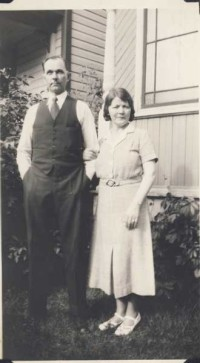

Aud Jorunn Karlsen
K, #10952, f. 31 mai 1947, d. 21 mars 2021
Foreldre
Familie: Olav Nils Hønnåshagen (f. 29 oktober 1940, d. mai 1988)
| Datter | Nina Hønnåshagen |
| Datter | Marthe Hønnåshagen |
Biografi
Aud Jorunn Karlsen ble født den 31 mai 1947 på/i Orkdal, Sør-Trøndelag. Hun giftet seg med
Olav Nils Hønnåshagen. Hun døde den 21 mars 2021 på/i Trondheim, Sør-Trøndelag. Hun ble gravlagt den 14 mai 2021 på/i Moholt kirkegård, Trondheim, Sør-Trøndelag.
Aud Jorunn Karlsen was also known as Aud Jorunn Hønnåshagen. Hun had reference number 39865. Hun bodde på/i Trondheim, Sør-Trøndelag. Hun ble bisatt den 7 april 2021 Svanholm seremonirom, Trondheim, Sør-Trøndelag.
| Sist redigert |
28 august 2025 22:16:31 |
| Slektskap | 11-menning til Lovise Julie Eggan |
Ole Martinusen
M, #10954, f. 31 august 1882, d. 11 april 1963
Biografi
Ole Martinusen ble født den 31 august 1882. Han giftet seg med
Johanna Berntine Johannesdatter Risli. Han døde den 11 april 1963 på/i Orkdal, Sør-Trøndelag. Han ble gravlagt den 20 april 1963 på/i Orkanger kirkegård, Orkdal, Sør-Trøndelag.
Ole Martinusen had reference number 39867.
| Sist redigert |
4 oktober 2015 00:00:00 |
Ernst William Svenson
M, #10955, f. 15 november 1890, d. 8 mars 1964

Ernst og Karen Swenson
Biografi
Ernst William Svenson ble født den 15 november 1890 på/i Oslo. Han giftet seg med
Karen Johannesdatter Risli. Han døde den 8 mars 1964 på/i USA. Han ble gravlagt på/i Orkanger kirkegård, Orkdal, Sør-Trøndelag.
Ernst William Svenson was also known as Ernst William Swenson. Han had reference number 39868.
| Sist redigert |
6 mars 2017 00:00:00 |
Olav Nils Hønnåshagen
M, #10959, f. 29 oktober 1940, d. mai 1988
Familie: Aud Jorunn Karlsen (f. 31 mai 1947, d. 21 mars 2021)
| Datter | Nina Hønnåshagen |
| Datter | Marthe Hønnåshagen |
Biografi
Olav Nils Hønnåshagen ble født den 29 oktober 1940 på/i Leksvik, Nord-Trøndelag. Han giftet seg med
Aud Jorunn Karlsen. Han døde i mai 1988 på/i Trondheim, Sør-Trøndelag. Han ble gravlagt den 27 mai 1988 på/i Moholt kirkegård, Trondheim, Sør-Trøndelag.
Olav Nils Hønnåshagen had reference number 39872.
| Sist redigert |
18 juli 2022 00:38:19 |
Anna Nilsdatter Brødreskift
K, #10962, f. 13 september 1910, d. 3 juli 1993
Familie: Olav Olsen Overskott (f. 10 september 1912, d. 9 mai 2007)
| Datter | Ella Olavsdatter Overskott+ |
| Sønn | Otto Arnfinn Olavsen Overskott+ |
| Datter | Nelly Enid Olavsdatter Overskott+ |
| Sønn | Leif Egil Olavsen Overskott+ |
Biografi
Anna Nilsdatter Brødreskift ble født den 13 september 1910 på/i Stadsbygd, Rissa, Sør-Trøndelag. Hun giftet seg med
Olav Olsen Overskott i 1937. Hun døde den 3 juli 1993 på/i Trondheim, Sør-Trøndelag. Hun ble gravlagt den 12 juli 1993 på/i Moholt kirkegård, Trondheim, Sør-Trøndelag.
Anna Nilsdatter Brødreskift was also known as Anna Overskott. Hun had reference number 39875.
| Sist redigert |
16 november 2011 00:00:00 |
Bjørn Vidar Hopøy
M, #10967, f. 1938, d. august 1995
Familie: Ella Olavsdatter Overskott
| Datter | Ann Cesilie Hopøy |
| Sønn | Dag Vidar Hopøy |
Biografi
Bjørn Vidar Hopøy ble født i 1938 på/i Sandefjord, Vestfold. Han giftet seg med Ella Olavsdatter Overskott. Han og Ella Olavsdatter Overskott ble skilt. Han døde i august 1995 på/i Sandefjord, Vestfold. Han ble gravlagt den 11 august 1995 på/i Ekeberg kirkegård, Sandefjord, Vestfold.
Bjørn Vidar Hopøy had reference number 39880.
| Sist redigert |
17 november 2011 00:00:00 |
{kind=link}